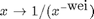
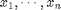
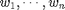
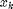
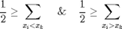

WEIGHTFILT_BASE - Matrix functional filter.
Contents
Description
Filter a matrix with the functional transform of another matrix.
Syntax
k = WEIGHTFILT_BASE(Awin, Dwin, wei);
Inputs
Awin : input window to filter.
Dwin : input window which functional transform is used to filter Awin; it should be of same size as Awin.
wei : weighting functional F(Awin,Dwin); it is either:
- a scalar <0 if the transform is a scale function with exponent wei, applied on Dwin ie. ,
- 0 if a weighted median filter is to be applied on Dwin using the weights given by the window Dwin,
- a scalar >0 if a gaussian weighting with standard deviation 1
and factor wei is applied on Dwin, ie. it takes
the form
 .
.
Outputs
k : scalar value obtained as an output of F(Awin,Dwin).
Function implementation
function k = weightfilt_base(Awin, Dwin, wei) % if wei==0, weighting = @wmedweight; % elseif wei>0, weighting = @gaussweight; % else weighting = @scaleweight; % end if wei==0, k = wmedweight(Awin, Dwin); elseif wei>0, k = gaussweight(Awin, Dwin, wei); else k = scaleweight(Awin, Dwin, wei); end end % end of weightfilt_base
Subfunctions
GAUSSWEIGHT - Gaussian-based weighting function
%-------------------------------------------------------------------------- function k = gaussweight(Awin, Dwin, a) Dwin = exp( - a * Dwin ); t = sum(Dwin); if(t>0), Dwin = Dwin/t; end k = sum(Awin.*Dwin); end % end of gaussweight
WMEDWEIGHT - Weighted median-based weighting function. For n numbers  with positive weights  (sum of all weights equal to one) the weighted median is defined as the element , such that: 
%-------------------------------------------------------------------------- function k = wmedweight(Awin, Dwin) Dwin = Dwin / max(Dwin(:)); % (line by line) transformation of the input-matrices to line-vectors d = reshape(Awin',1,[]); w = reshape(Dwin',1,[]); % sort the vectors A = [d' w']; ASort = sortrows(A,1); dSort = ASort(:,1)'; wSort = ASort(:,2)'; l = length(wSort); sumVec = zeros(1,l); % vector for cumulative sums of the weights for i = 1:l sumVec(i) = sum(wSort(1:i)); end k = []; j = 0; while isempty(k) j = j + 1; if sumVec(j) >= 0.5 k = dSort(j); % value of the weighted median end end end % end of wmedweight
SCALEWEIGHT - Scale-based weighting function.
%-------------------------------------------------------------------------- function k = scaleweight(Awin, Dwin, a) Dwin = rescale(Dwin,eps,1) .^ a; t = sum(Dwin); if(t>0), Dwin = Dwin/t; end k = sum(Awin.*Dwin); end % end of scaleweight